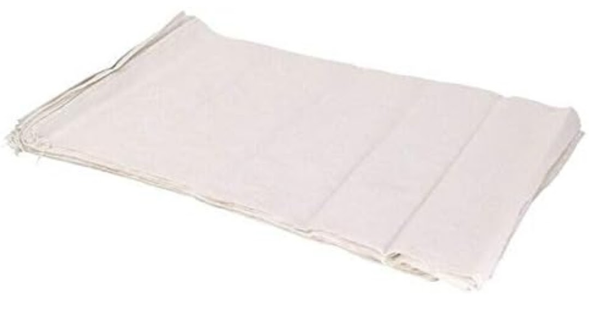
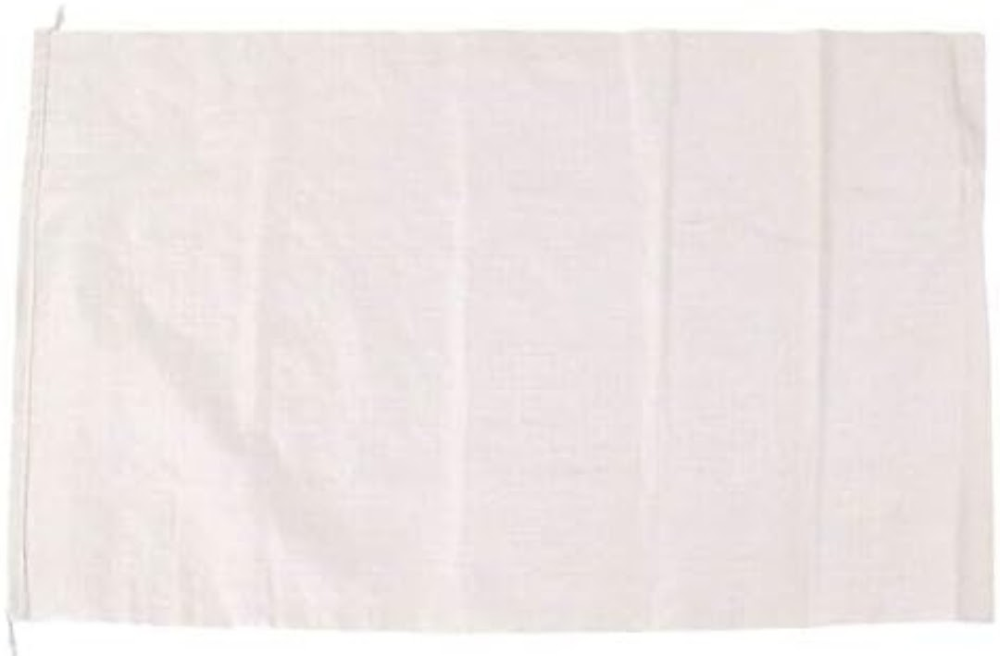
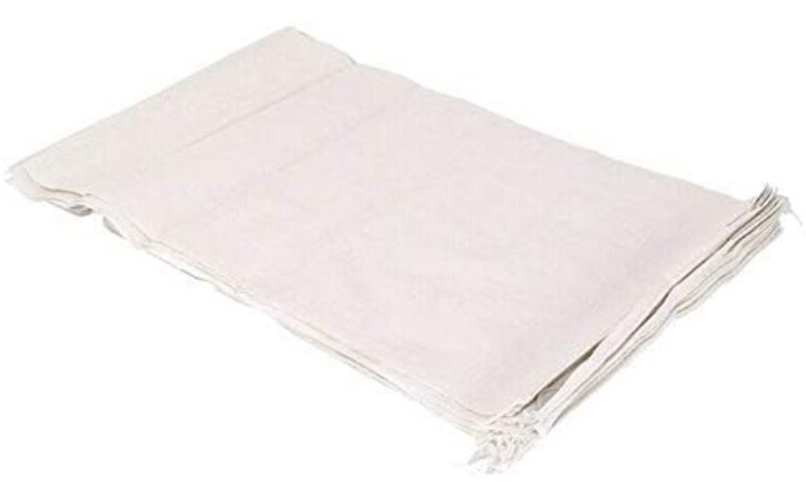
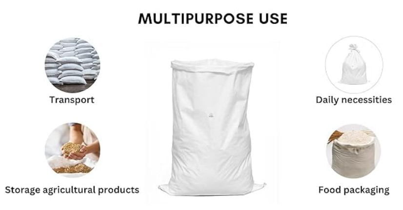
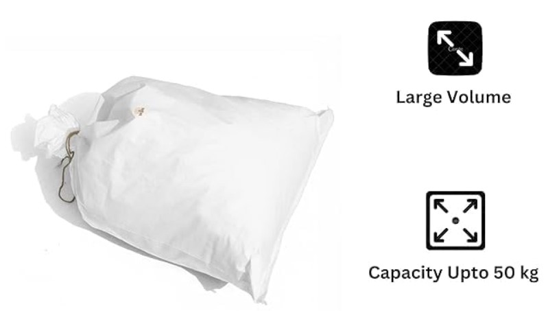

High-strength woven polypropylene sacks designed for safe packaging, handling, and transportation of bulk materials.






Woven Sacks are manufactured from woven polypropylene fabric and are widely used for packaging, storage, and transport of bulk materials across agricultural and industrial sectors.
These sacks offer excellent load-bearing strength, durability, and resistance to tearing, making them suitable for both short-term and long-distance handling.
For Indian storage and transport conditions, woven sack selection should be based on load weight, stacking height, and moisture exposure. Laminated sacks are recommended where moisture protection is required, while unlaminated sacks are suitable for dry goods and short-term storage.